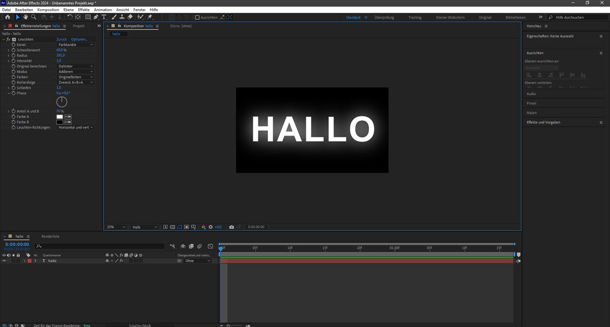

Interests & Creative Hobbies
Beyond academic lectures and business computing assignments at UMSKAL, these four pursuits keep my mind sharp, my creativity flowing, and my analytical reflexes primed.
 Gaming Vibes
Gaming Vibes
Gaming: PC & Mobile
Engaging in diverse game worlds, from tactical teamwork in Valorant and fast paced battle arena strategy in Mobile Legends, to creative architecture, survival, and redstone logic in Minecraft. Gaming sharpens spatial awareness, rapid decision making, and team communication.
 Software Logic
Software Logic
Coding & Software Logic
Writing clean, structured software with core focus on Java, C++, and object oriented systems. As a Business Computing student, coding builds algorithmic thinking to solve complex computational challenges.

Motion & AudioVideo & Audio Editing
Crafting dynamic video sequences, keyframe animations, and synchronized audio tracks in Adobe After Effects. My focus centers strictly on video cuts, visual rhythm, motion graphics, and immersive sound design.
Exploring & Enhancing AI
Diving into modern artificial intelligence systems, learning advanced prompt crafting, and enhancing personal workflows. From experimenting with large language models to integrating intelligent tools into software logic and business data analysis, this passion unlocks smarter productivity.
How My Hobbies Power Business Computing
Each personal pursuit feeds directly into my academic and professional toolkit in Business Computing: gaming sharpens strategic composure and spatial logic, Java and C++ strengthen software architecture, video audio editing elevates digital content delivery, and exploring AI enhances intelligent workflow automation.